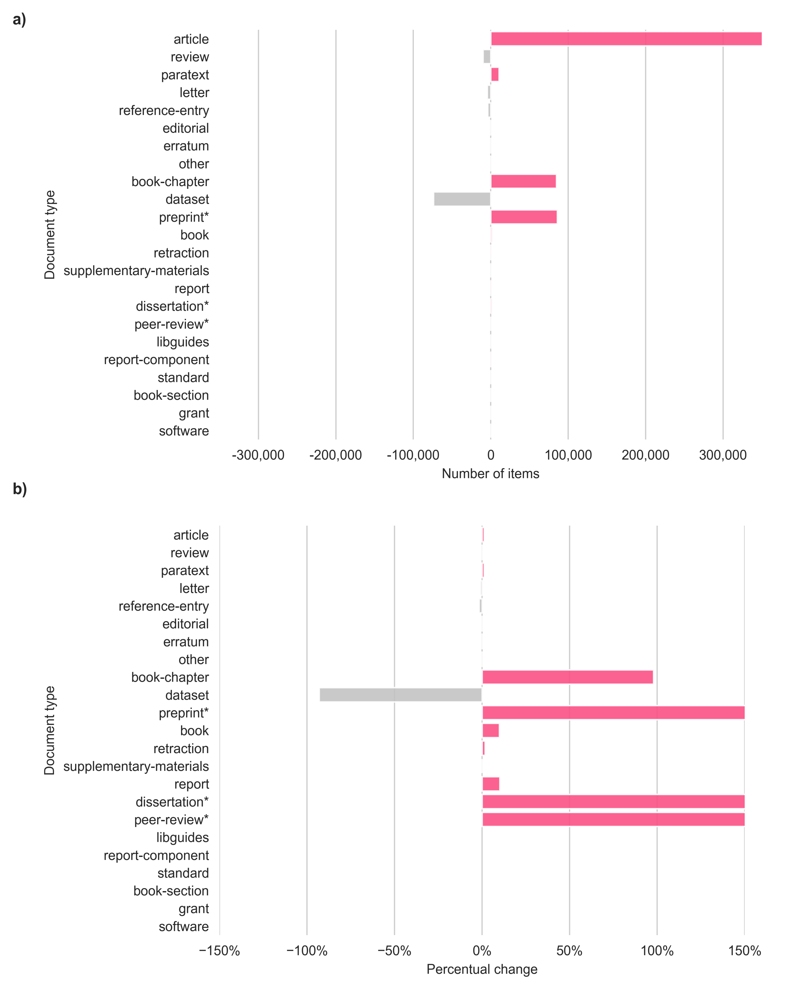
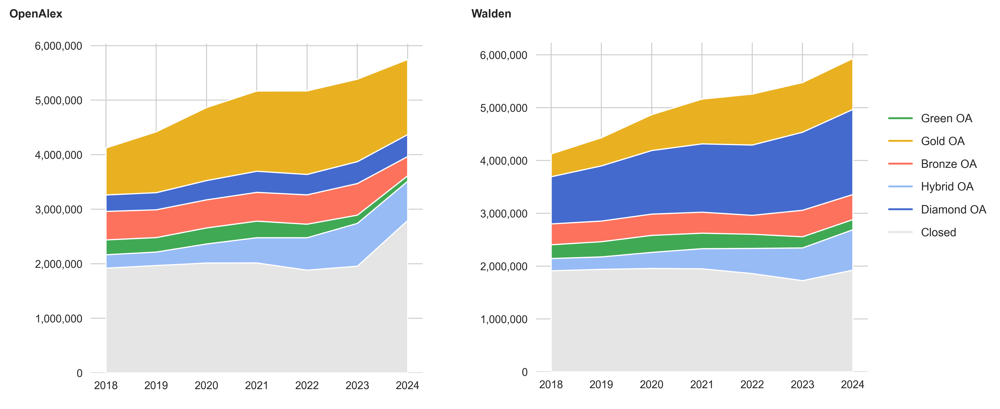
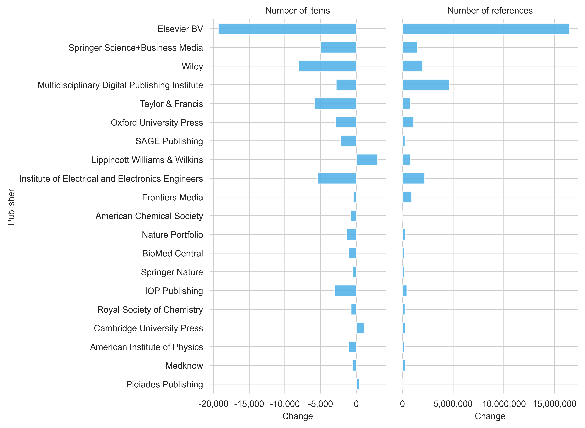

Walden: What has changed in OpenAlex?
Nick Haupka ![]()
Abstract
The team behind OpenAlex has reworked the OpenAlex service with the rollout of the Walden update in November 2025. In this blog post, I will examine how the Walden release has affected the database and what impact this may have on users. Based on a comparison of journal articles between 2018 and 2024 from the OpenAlex September 2025 snapshot and a Walden snapshot from February 2026, an increase in references and publications can be observed. However large differences can be observed in OA detection, where Diamond OA is classified far more frequently than in the pre-Walden phase.
Introduction
The past few months brought some changes to the OpenAlex data service. The most relevant update happened in November 2025 with the Walden Update, which promised better reference coverage, improved OA detection and a more extensive database. In January 2026, improved integration of funding information was introduced, along with a new entity called Awards. At the same time, little is known about the consequences of the changes so far. In December 2025, it was observed that the quality of author affiliations had declined with the Walden update (Jahn 2025). Meanwhile, there have been two further Walden updates (15 January 2026 and 3 February 2026) that address an improvement to the problem.
In this blog post, I will take a closer look at the changes made in the Walden release. To do this, I will contrast a pre-Walden snapshot from September 2025 with a Walden snapshot from February 2026. The data analysis will cover changes in publication volume, OA status, references, funding information, document types and publication types. The analysis is limited to publications from 2018 and 2024 and to journal articles only.
Data and Methods
The publicly accessible scholarly data warehouse, powered by Google BigQuery and operated by the Göttingen State and University Library, provides access to both an OpenAlex snapshot from September 2025 and the most recent Walden snapshot from February 2026. Access requires a free Google account (Payment information is required, but Google offers the first 1 TB of queries free of charge).
The analysis was carried out by querying both OpenAlex versions separately and then comparing the results (i.e. no inner join, no shared dataset). This approach is intended to ensure that the new records added to Walden can also be included in the analysis. This is particularly the case for records labelled as expansion packs (which have an is_xpac=True in the data). The following analysis does not exclude retractions (is_retracted), paratexts (is_paratext) and the expansion pack (is_xpac).
The analysis was conducted in Python. If you are interested in reproducing a figure, you may click on one of the grey arrows below to view my Python code, which was used to run the data analysis and generate the figures.
Python code for setup
from google.cloud import bigquery
import pandas as pd
import matplotlib.pyplot as plt
import seaborn as sns
import numpy as np
from matplotlib.lines import Line2D
import matplotlib.ticker as mtick
import matplotlib.image as mpimg
client = bigquery.Client(project='subugoe-collaborative')
openalex_snapshot = 'subugoe-collaborative.openalex.works'
walden_snapshot = 'subugoe-collaborative.openalex_walden.works'
sns.set_style('whitegrid')
plt.rc('font', family='Arial')
plt.rc('font', size=9)
plt.rc('axes', titlesize=9)
plt.rc('axes', labelsize=9)
plt.rc('xtick', labelsize=9)
plt.rc('ytick', labelsize=9)
plt.rc('legend', fontsize=9)
def calculate_changes(df1_openalex, df2_walden, on):
changes = pd.merge(df1_openalex, df2_walden, on=on, how='outer', suffixes=('_openalex', '_walden'))
changes['n_openalex'] = changes['n_openalex'].fillna(0)
changes['n_walden'] = changes['n_walden'].fillna(0)
changes = changes[[on, 'n_openalex', 'n_walden']]
changes['change'] = changes['n_walden'] - changes['n_openalex']
changes['pct_change'] = (changes['n_walden'] - changes['n_openalex']) / changes['n_openalex'] * 100
return changesResults
Publication volume
Let’s start by comparing the number of journal articles between OpenAlex (shown in grey) and Walden (shown in pink) for the publication years 2018 to 2024 (see Figure 1). A record is considered a journal article if it is assigned to the source type journal and the item type article or review.
In total, OpenAlex counts 34,884,266 articles, while the Walden snapshot counts 34,893,901 journal articles (which correspond to an overall increase of 0.03%). When looking at individual publication years, it can be seen that the number of journal articles in the Walden snapshot is slightly lower than in the September 2025 snapshot for the publication years 2018 to 2021 (around -1% per year). From 2022 onwards, the number of articles in the Walden snapshot increases, with the difference being +0,6% (for 2022 and 2023) and +2% (for 2024).
SQL code
-- oal_by_pubyear
SELECT COUNT(DISTINCT(doi)) AS n, publication_year
FROM `subugoe-collaborative.openalex.works`
WHERE primary_location.source.type = 'journal' AND publication_year BETWEEN 2018 AND 2024 AND (type = 'article' OR type = 'review')
GROUP BY publication_year
ORDER BY publication_year DESC
-- walden_by_pubyear
SELECT COUNT(DISTINCT(doi)) AS n, publication_year
FROM `subugoe-collaborative.openalex_walden.works`
WHERE primary_location.source.type = 'journal' AND publication_year BETWEEN 2018 AND 2024 AND (type = 'article' OR type = 'review')
GROUP BY publication_year
ORDER BY publication_year DESCPython code
oal_by_pubyear = client.query(f"""
SELECT COUNT(DISTINCT(doi)) AS n, publication_year
FROM {openalex_snapshot}
WHERE primary_location.source.type = 'journal' AND publication_year BETWEEN 2018 AND 2024 AND (type = 'article' OR type = 'review')
GROUP BY publication_year
ORDER BY publication_year DESC
""").to_dataframe()
walden_by_pubyear = client.query(f"""
SELECT COUNT(DISTINCT(doi)) AS n, publication_year
FROM {walden_snapshot}
WHERE primary_location.source.type = 'journal' AND publication_year BETWEEN 2018 AND 2024 AND (type = 'article' OR type = 'review')
GROUP BY publication_year
ORDER BY publication_year DESC
""").to_dataframe()
calculate_changes(oal_by_pubyear, walden_by_pubyear, on='publication_year').sort_values(by=['change'], ascending=False)
oal_by_pubyear['dataset'] = 'OpenAlex'
walden_by_pubyear['dataset'] = 'Walden'
fig, ax = plt.subplots(figsize=(7,4))
plt.box(False)
sns.barplot(data=pd.concat([oal_by_pubyear, walden_by_pubyear], ignore_index=True),
x='publication_year',
y='n',
palette=['#c3c3c3', '#fc5185'],
hue='dataset',
width=0.6,
saturation=1,
alpha=0.9,
zorder=3,
errorbar=None,
ax=ax)
ax.yaxis.set_major_formatter(mtick.StrMethodFormatter('{x:,.0f}'))
ax.grid(False, which='both', axis='x')
ax.set(xlabel='Year', ylabel='Number of journal articles')
ax.legend(bbox_to_anchor=(1.05, 0.9),
frameon=False,
title='Dataset',
labelspacing=1.0)
plt.tight_layout()
plt.show()
fig.savefig('media/blog_post_pubyear.png', format='png', bbox_inches='tight', dpi=500)Data
| publication_year | n_openalex | n_walden | change | pct_change |
|---|---|---|---|---|
| 2024 | 5747463 | 5866769 | 119306 | 2.0758 |
| 2023 | 5385802 | 5421376 | 35574 | 0.660514 |
| 2022 | 5170934 | 5204308 | 33374 | 0.645415 |
| 2021 | 5168607 | 5113724 | -54883 | -1.06185 |
| 2020 | 4865503 | 4820914 | -44589 | -0.916431 |
| 2019 | 4421064 | 4383193 | -37871 | -0.856604 |
| 2018 | 4124893 | 4083617 | -41276 | -1.00066 |
Publication types
To better understand the changes in the Walden snapshot, it makes sense to take a step back and look at the distribution of publication types in both snapshots.
| Publication type | Number of records in OpenAlex |
Number of records in Walden |
Change | Change in % | Share in OpenAlex | Share in Walden |
|---|---|---|---|---|---|---|
| journal | 37,162,915 | 37,265,545 | +102,630 | +0.28% | 61.44% | 34.85% |
| repository | 7,095,230 | 43,716,031 | +36,620,801 | +516.13% | 11.73% | 40.88% |
| None | 6,908,023 | 13,455,640 | +6,547,617 | +94.78% | 11.42% | 12.58% |
| ebook platform | 6,502,127 | 3,930,549 | -2,571,578 | -39.55% | 10.75% | 3.68% |
| book series | 1,488,834 | 1,478,195 | -10,639 | -0.71% | 2.46% | 1.38% |
| conference | 1,331,331 | 768,789 | -562,542 | -42.25% | 2.2% | 0.72% |
| other | 97 | 187 | +90 | +92.78% | 0% | 0% |
| igsnCatalog | 0 | 6,328,178 | +6,328,178 | inf | 0% | 5.92% |
| metadata | 0 | 270 | +270 | inf | 0% | 0% |
| raidRegistry | 0 | 4 | +4 | inf | 0% | 0% |
Here we can see that the publication type journal has a relatively small increase (+0.28%) compared to other source types such as repository (+516%). Based on their respective share in the snapshot, records with the source type journal account for approximately 61% of the records in the September snapshot and only 35% in the Walden snapshot. This is partly due to an increase in items with the source type igsnCatalog and records without an assigned source type (and of course, records from repositories). With Walden, three new publication types are available: igsnCatalog, metadata and raidRegistry.
SQL code
-- oal_by_source_types
SELECT COUNT(DISTINCT(doi)) AS n, primary_location.source.type AS source_type
FROM `subugoe-collaborative.openalex.works`
WHERE publication_year BETWEEN 2018 AND 2024
GROUP BY source_type
ORDER BY n DESC
-- walden_by_source_types
SELECT COUNT(DISTINCT(doi)) AS n, primary_location.source.type AS source_type
FROM `subugoe-collaborative.openalex_walden.works`
WHERE publication_year BETWEEN 2018 AND 2024
GROUP BY source_type
ORDER BY n DESCPython code
oal_by_source_types = client.query(f"""
SELECT COUNT(DISTINCT(doi)) AS n, primary_location.source.type AS source_type
FROM {openalex_snapshot}
WHERE publication_year BETWEEN 2018 AND 2024
GROUP BY source_type
ORDER BY n DESC
""").to_dataframe()
walden_by_source_types = client.query(f"""
SELECT COUNT(DISTINCT(doi)) AS n, primary_location.source.type AS source_type
FROM {walden_snapshot}
WHERE publication_year BETWEEN 2018 AND 2024
GROUP BY source_type
ORDER BY n DESC
""").to_dataframe()
source_type_plot = calculate_changes(oal_by_source_types, walden_by_source_types, on='source_type')
source_type_plot['n_openalex_total'] = source_type_plot['n_openalex'].sum()
source_type_plot['openalex_share'] = source_type_plot['n_openalex'] / source_type_plot['n_openalex_total'] * 100
source_type_plot['n_walden_total'] = source_type_plot['n_walden'].sum()
source_type_plot['walden_share'] = source_type_plot['n_walden'] / source_type_plot['n_walden_total'] * 100Document types
Next, we look at the distribution of document types in both snapshots (see Figure 2). Note, that records have been restricted to the source type journal again.
We can see that the number of records with the document types article, paratext, book-chapter and preprint have increased in the latest Walden snapshot. However, in relative terms, the increase in journal articles is very limited (only 0.06%). With an increase of over 150%, preprints and dissertations have seen the highest rise (relatively speaking). Records with the document type dataset, in contrast, have been classified less frequently in the recent snapshot (about 76,000 records less).

SQL code
-- oal_by_types
SELECT COUNT(DISTINCT(doi)) AS n, type
FROM `subugoe-collaborative.openalex.works`
WHERE primary_location.source.type = 'journal' AND publication_year BETWEEN 2018 AND 2024
GROUP BY type
ORDER BY n DESC
-- walden_by_types
SELECT COUNT(DISTINCT(doi)) AS n, type
FROM `subugoe-collaborative.openalex_walden.works`
WHERE primary_location.source.type = 'journal' AND publication_year BETWEEN 2018 AND 2024
GROUP BY type
ORDER BY n DESCPython code
oal_by_types = client.query(f"""
SELECT COUNT(DISTINCT(doi)) AS n, type
FROM {openalex_snapshot}
WHERE primary_location.source.type = 'journal' AND publication_year BETWEEN 2018 AND 2024
GROUP BY type
ORDER BY n DESC
""").to_dataframe()
walden_by_types = client.query(f"""
SELECT COUNT(DISTINCT(doi)) AS n, type
FROM {walden_snapshot}
WHERE primary_location.source.type = 'journal' AND publication_year BETWEEN 2018 AND 2024
GROUP BY type
ORDER BY n DESC
""").to_dataframe()
types_plot = calculate_changes(oal_by_types, walden_by_types, on='type')
types_plot['n_openalex_total'] = types_plot['n_openalex'].sum()
types_plot['openalex_share'] = types_plot['n_openalex'] / types_plot['n_openalex_total'] * 100
types_plot['n_walden_total'] = types_plot['n_walden'].sum()
types_plot['walden_share'] = types_plot['n_walden'] / types_plot['n_walden_total'] * 100
types_plot.replace(to_replace='preprint', value='preprint*', inplace=True)
types_plot.replace(to_replace='dissertation', value='dissertation*', inplace=True)
change_color = ['#c3c3c3' if (x < 0) else '#fc5185' for x in types_plot.change]
fig, ax = plt.subplots(figsize=(7,4.5))
plt.box(False)
sns.barplot(data=types_plot,
x='change',
y='type',
orient='h',
saturation=1,
palette=change_color,
hue='type',
alpha=0.9,
zorder=3,
errorbar=None)
ax.xaxis.set_major_formatter(mtick.StrMethodFormatter('{x:,.0f}'))
ax.set(xlabel='Number of items', ylabel='Document type')
plt.tight_layout()
plt.show()
fig.savefig('media/blog_post_document_types_changes.png', format='png', bbox_inches='tight', dpi=500)
fig, ax = plt.subplots(figsize=(7,4.5))
plt.box(False)
sns.barplot(data=types_plot,
x='pct_change',
y='type',
orient='h',
saturation=1,
palette=change_color,
hue='type',
alpha=0.9,
zorder=3,
errorbar=None,)
ax.xaxis.set_major_formatter(mtick.PercentFormatter(100))
ax.set_xlim(-100, 150)
ax.set(xlabel='Percentual change', ylabel='Document type')
plt.tight_layout()
plt.show()
fig.savefig('media/blog_post_document_types_pct_changes.png', format='png', bbox_inches='tight', dpi=500)
fig, axs = plt.subplots(2, 1, figsize=(10, 10))
filelist = ['blog_post_document_types_changes', 'blog_post_document_types_pct_changes']
for i, (ax, file) in enumerate(zip(axs.flat, filelist)):
ax.set_axis_off()
filename = 'media/' + file + '.png'
ax.imshow(mpimg.imread(filename), extent=None)
plt.subplots_adjust(wspace=0, hspace=0.05)
plt.text(-100, -2300, 'a)', size=9, weight='bold')
plt.text(-100, -100, 'b)', size=9, weight='bold')
plt.show()
fig.savefig('media/blog_post_figure1.png', format='png', bbox_inches='tight', dpi=500)Data
| type | n_openalex | n_walden | change | pct_change | openalex_share | walden_share |
|---|---|---|---|---|---|---|
| article | 33440278 | 33461175 | 20897 | 0.0624905 | 89.9828 | 89.7909 |
| review | 1443989 | 1432537 | -11452 | -0.793081 | 3.88556 | 3.84412 |
| paratext | 930439 | 939242 | 8803 | 0.946113 | 2.50367 | 2.5204 |
| letter | 424062 | 419502 | -4560 | -1.07531 | 1.14109 | 1.12571 |
| reference-entry | 223020 | 219102 | -3918 | -1.75679 | 0.600114 | 0.587946 |
| editorial | 216188 | 214769 | -1419 | -0.656373 | 0.58173 | 0.576319 |
| erratum | 151724 | 150723 | -1001 | -0.659751 | 0.408267 | 0.404455 |
| other | 96666 | 94824 | -1842 | -1.90553 | 0.260114 | 0.254454 |
| book-chapter | 86699 | 171301 | 84602 | 97.5813 | 0.233294 | 0.459675 |
| dataset | 79573 | 3474 | -76099 | -95.6342 | 0.214119 | 0.00932226 |
| preprint* | 21209 | 106604 | 85395 | 402.636 | 0.0570703 | 0.286065 |
| book | 19407 | 21035 | 1628 | 8.38873 | 0.0522214 | 0.0564461 |
| retraction | 16913 | 17183 | 270 | 1.59641 | 0.0455104 | 0.0461095 |
| supplementary-materials | 7109 | 7108 | -1 | -0.0140667 | 0.0191293 | 0.0190739 |
| report | 5505 | 5806 | 301 | 5.46776 | 0.0148131 | 0.01558 |
| dissertation* | 162 | 1148 | 986 | 608.642 | 0.000435918 | 0.00308058 |
| peer-review | 4 | 4 | 0 | 0 | 1.07634e-05 | 1.07337e-05 |
| libguides | 0 | 0 | 0 | nan | 0 | 0 |
| report-component | 0 | 121 | 121 | inf | 0 | 0.000324696 |
| book-section | 0 | 2 | 2 | inf | 0 | 5.36687e-06 |
Open Access
Major changes are also noticeable in terms of the classification of open access between both snapshots. For example, Diamond OA is far more pronounced in the Walden snapshot than in the September Snapshot, with over 6,3 million more records classified (+249%). Journal articles classified as Gold OA, conversely, are dropping notably, by about 41.5% (-3,817,054). Hybrid OA falls by 11.6% overall (-393,277) and Bronze OA by 18.6% (-658,037). The proportion of Green OA in the Walden snapshot decreased by 12% (-199,557) and the proportion of non-accessible items (closed) declined by 8% (-1,237,035).

SQL code
-- oal_by_oa
SELECT COUNT(DISTINCT(doi)) AS n, open_access.oa_status, publication_year
FROM `subugoe-collaborative.openalex.works`
WHERE primary_location.source.type = 'journal' AND publication_year BETWEEN 2018 AND 2024 AND (type = 'article' OR type = 'review')
GROUP BY oa_status, publication_year
ORDER BY n DESC
-- walden_by_oa
SELECT COUNT(DISTINCT(doi)) AS n, open_access.oa_status, publication_year
FROM `subugoe-collaborative.openalex_walden.works`
WHERE primary_location.source.type = 'journal' AND publication_year BETWEEN 2018 AND 2024 AND (type = 'article' OR type = 'review')
GROUP BY oa_status, publication_year
ORDER BY n DESCPython code
oal_by_oa = client.query(f"""
SELECT COUNT(DISTINCT(doi)) AS n, open_access.oa_status, publication_year
FROM {openalex_snapshot}
WHERE primary_location.source.type = 'journal' AND publication_year BETWEEN 2018 AND 2024 AND (type = 'article' OR type = 'review')
GROUP BY oa_status, publication_year
ORDER BY n DESC
""").to_dataframe()
walden_by_oa = client.query(f"""
SELECT COUNT(DISTINCT(doi)) AS n, open_access.oa_status, publication_year
FROM {walden_snapshot}
WHERE primary_location.source.type = 'journal' AND publication_year BETWEEN 2018 AND 2024 AND (type = 'article' OR type = 'review')
GROUP BY oa_status, publication_year
ORDER BY n DESC
""").to_dataframe()
oa_plot = pd.merge(oal_by_oa, walden_by_oa, on=['oa_status', 'publication_year'], how='inner', suffixes=('_openalex', '_walden'))
oa_plot = oa_plot.sort_values(by=['oa_status', 'publication_year'])
fig, ax = plt.subplots(figsize=(5,5))
plt.box(False)
plt.stackplot([2018, 2019, 2020, 2021, 2022, 2023, 2024],
oa_plot[oa_plot.oa_status == 'closed']['n_openalex'].tolist(),
oa_plot[oa_plot.oa_status == 'hybrid']['n_openalex'].tolist(),
oa_plot[oa_plot.oa_status == 'green']['n_openalex'].tolist(),
oa_plot[oa_plot.oa_status == 'bronze']['n_openalex'].tolist(),
oa_plot[oa_plot.oa_status == 'diamond']['n_openalex'].tolist(),
oa_plot[oa_plot.oa_status == 'gold']['n_openalex'].tolist(),
colors=['#e5e5e5', '#97bbf5ff', '#40a954', '#fd725d', '#446ace', '#e9b121'],
)
ax.yaxis.set_major_formatter(mtick.StrMethodFormatter('{x:,.0f}'))
plt.xticks([2018, 2019, 2020, 2021, 2022, 2023, 2024])
plt.show()
fig.savefig('media/blog_post_oa_oal_area_chart.png', format='png', bbox_inches='tight', dpi=500)
fig, ax = plt.subplots(figsize=(5,5))
plt.box(False)
plt.stackplot([2018, 2019, 2020, 2021, 2022, 2023, 2024],
oa_plot[oa_plot.oa_status == 'closed']['n_walden'].tolist(),
oa_plot[oa_plot.oa_status == 'hybrid']['n_walden'].tolist(),
oa_plot[oa_plot.oa_status == 'green']['n_walden'].tolist(),
oa_plot[oa_plot.oa_status == 'bronze']['n_walden'].tolist(),
oa_plot[oa_plot.oa_status == 'diamond']['n_walden'].tolist(),
oa_plot[oa_plot.oa_status == 'gold']['n_walden'].tolist(),
colors=['#e5e5e5', '#97bbf5ff', '#40a954', '#fd725d', '#446ace', '#e9b121'],
)
ax.yaxis.set_major_formatter(mtick.StrMethodFormatter('{x:,.0f}'))
plt.xticks([2018, 2019, 2020, 2021, 2022, 2023, 2024])
plt.show()
fig.savefig('media/blog_post_oa_walden_area_chart.png', format='png', bbox_inches='tight', dpi=500)
fig, axs = plt.subplots(1, 2, figsize=(12, 8))
filelist = ['blog_post_oa_oal_area_chart', 'blog_post_oa_walden_area_chart']
for i, (ax, file) in enumerate(zip(axs.flat, filelist)):
ax.set_axis_off()
filename = 'media/' + file + '.png'
ax.imshow(mpimg.imread(filename), extent=None)
plt.subplots_adjust(wspace=0.1, hspace=0)
plt.text(-2700, -100, 'OpenAlex', size=9, weight='bold')
plt.text(0, -100, 'Walden', size=9, weight='bold')
green_oa_patch = Line2D([0], [0], color='#40a954', label='Green OA')
gold_oa_patch = Line2D([0], [0], color='#e9b121', label='Gold OA')
bronze_oa_patch = Line2D([0], [0], color='#fd725d', label='Bronze OA')
hybrid_oa_patch = Line2D([0], [0], color='#97bbf5ff', label='Hybrid OA')
diamond_oa_patch = Line2D([0], [0], color='#446ace', label='Diamond OA')
closed_oa_patch = Line2D([0], [0], color='#e5e5e5', label='Closed')
lgd = fig.legend(handles=[green_oa_patch,
gold_oa_patch,
bronze_oa_patch,
hybrid_oa_patch,
diamond_oa_patch,
closed_oa_patch], frameon=False,
bbox_to_anchor=(1.01, 0.65), labelspacing=1.05)
plt.show()
fig.savefig('media/blog_post_figure3.png', format='png', bbox_inches='tight', dpi=500)Data
| oa_status | n_openalex | n_walden | change | pct_change |
|---|---|---|---|---|
| bronze | 3543148 | 2885111 | -658037 | -18.5721 |
| closed | 14565362 | 13328327 | -1237035 | -8.49299 |
| diamond | 2534510 | 8849415 | 6314905 | 249.157 |
| gold | 9204670 | 5387616 | -3817054 | -41.4687 |
| green | 1635056 | 1435499 | -199557 | -12.2049 |
| hybrid | 3401545 | 3008268 | -393277 | -11.5617 |
Publishers and References
In this section, I will look at the 20 largest publishers in OpenAlex (based on publication volume in the September 2025 snapshot) to 1) examine changes in publication volume in the Walden snapshot and 2) highlight changes in the enrichment of references in the latest Walden snapshot (see Figure 4).
Overall, a decline in publication numbers can be observed for most of the top publishers in the Walden snapshot. The number of journal articles published by Elsevier falls by 0.36% from 5,310,142 to 5,290,767 articles. Similarly, the number of journal articles for Wiley decreases from 1,704,126 to 1,694,799 (-0.55%). An increase in publications can be measured for the publishers Lippincott Williams & Wilkins (+0.44%) and Cambridge University Press (+0.36%).
A major increase can be seen in references, with the number of references for articles from the publishing house Elsevier standing out in particular (+16,477,238 references). In percentage terms, the publisher Institute of Electrical and Electronics Engineers has seen the biggest change, with an increase of 15.29% (2,205,283) references.

SQL code
-- oal_by_host
SELECT COUNT(DISTINCT(doi)) AS n, primary_location.source.host_organization_name
FROM `subugoe-collaborative.openalex.works`
WHERE primary_location.source.type = 'journal' AND publication_year BETWEEN 2018 AND 2024 AND (type = 'article' OR type = 'review')
GROUP BY host_organization_name
ORDER BY n DESC
-- walden_by_host
SELECT COUNT(DISTINCT(doi)) AS n, primary_location.source.host_organization_name
FROM `subugoe-collaborative.openalex_walden.works`
WHERE primary_location.source.type = 'journal' AND publication_year BETWEEN 2018 AND 2024 AND (type = 'article' OR type = 'review')
GROUP BY host_organization_name
ORDER BY n DESC
-- oal_by_host_references
SELECT SUM(referenced_works_count) AS n, primary_location.source.host_organization_name
FROM `subugoe-collaborative.openalex.works`
WHERE primary_location.source.type = 'journal' AND publication_year BETWEEN 2018 AND 2024 AND (type = 'article' OR type = 'review')
GROUP BY host_organization_name
ORDER BY n DESC
-- walden_by_host_references
SELECT SUM(referenced_works_count) AS n, primary_location.source.host_organization_name
FROM `subugoe-collaborative.openalex_walden.works`
WHERE primary_location.source.type = 'journal' AND publication_year BETWEEN 2018 AND 2024 AND (type = 'article' OR type = 'review')
GROUP BY host_organization_name
ORDER BY n DESCPython code
oal_by_host = client.query(f"""
SELECT COUNT(DISTINCT(doi)) AS n, primary_location.source.host_organization_name
FROM {openalex_snapshot}
WHERE primary_location.source.type = 'journal' AND publication_year BETWEEN 2018 AND 2024 AND (type = 'article' OR type = 'review')
GROUP BY host_organization_name
ORDER BY n DESC
""").to_dataframe()
walden_by_host = client.query(f"""
SELECT COUNT(DISTINCT(doi)) AS n, primary_location.source.host_organization_name
FROM {walden_snapshot}
WHERE primary_location.source.type = 'journal' AND publication_year BETWEEN 2018 AND 2024 AND (type = 'article' OR type = 'review')
GROUP BY host_organization_name
ORDER BY n DESC
""").to_dataframe()
host_plot = calculate_changes(oal_by_host, walden_by_host, on='host_organization_name').sort_values(by=['n_openalex'], ascending=False)
oal_by_host_references = client.query(f"""
SELECT SUM(referenced_works_count) AS n, primary_location.source.host_organization_name
FROM {openalex_snapshot}
WHERE primary_location.source.type = 'journal' AND publication_year BETWEEN 2018 AND 2024 AND (type = 'article' OR type = 'review')
GROUP BY host_organization_name
ORDER BY n DESC
""").to_dataframe()
walden_by_host_references = client.query(f"""
SELECT SUM(referenced_works_count) AS n, primary_location.source.host_organization_name
FROM {walden_snapshot}
WHERE primary_location.source.type = 'journal' AND publication_year BETWEEN 2018 AND 2024 AND (type = 'article' OR type = 'review')
GROUP BY host_organization_name
ORDER BY n DESC
""").to_dataframe()
ref_plot = calculate_changes(oal_by_host_references, walden_by_host_references, on='host_organization_name').sort_values(by=['n_openalex'], ascending=False)
host_plot_merge = pd.merge(host_plot, ref_plot, on=['host_organization_name'], how='outer', suffixes=('_items', '_refs'))
host_top_20_plot = host_plot_merge.sort_values(by=['n_openalex_items'], ascending=False).head(21)
g = sns.PairGrid(host_top_20_plot,
x_vars=['change_items', 'change_refs'],
y_vars=['host_organization_name'],
height=6,
aspect=.5)
g.map(sns.barplot,
color='#56B4E9',
width=0.6,
saturation=1,
alpha=0.9,
zorder=3,
errorbar=None,
orient='y')
plt.box(False)
g.set(xlabel='Change', ylabel='Publisher')
titles = ['Number of items', 'Number of references']
for ax, title in zip(g.axes.flat, titles):
ax.set(title=title)
ax.xaxis.grid(True)
ax.yaxis.grid(True)
ax.xaxis.set_major_formatter(mtick.StrMethodFormatter('{x:,.0f}'))
sns.despine(left=True, bottom=True)
fig = g.fig.get_figure()
plt.show()
fig.savefig('media/blog_post_figure4.png', format='png', bbox_inches='tight', dpi=500)Data
| host_organization_name | n_openalex_items | n_walden_items | change_items | pct_change_items | n_openalex_refs | n_walden_refs | change_refs | pct_change_refs |
|---|---|---|---|---|---|---|---|---|
| None | 8504822 | 8658958 | 154136 | 1.81234 | 61376055 | 69072543 | 7696488 | 12.5399 |
| Elsevier BV | 5310142 | 5290767 | -19375 | -0.364868 | 205490953 | 221968191 | 16477238 | 8.01847 |
| Springer Science+Business Media | 1725031 | 1719995 | -5036 | -0.291937 | 68335429 | 69781040 | 1445611 | 2.11546 |
| Wiley | 1704126 | 1694799 | -9327 | -0.547319 | 68287084 | 70288508 | 2001424 | 2.9309 |
| Multidisciplinary Digital Publishing Institute | 1380269 | 1377671 | -2598 | -0.188224 | 72602925 | 77215383 | 4612458 | 6.35299 |
| Taylor & Francis | 884007 | 878085 | -5922 | -0.669904 | 31776175 | 32544861 | 768686 | 2.41906 |
| Oxford University Press | 585923 | 583037 | -2886 | -0.492556 | 15676432 | 16797118 | 1120686 | 7.14886 |
| SAGE Publishing | 532495 | 530335 | -2160 | -0.405638 | 16620534 | 16874504 | 253970 | 1.52805 |
| Lippincott Williams & Wilkins | 512114 | 514345 | 2231 | 0.435645 | 7607006 | 8436201 | 829195 | 10.9004 |
| Institute of Electrical and Electronics Engineers | 460108 | 454684 | -5424 | -1.17885 | 14419607 | 16624890 | 2205283 | 15.2936 |
| Frontiers Media | 457156 | 456839 | -317 | -0.0693418 | 28056492 | 28960699 | 904207 | 3.22281 |
| American Chemical Society | 452077 | 451268 | -809 | -0.178952 | 23879558 | 23930234 | 50676 | 0.212215 |
| Nature Portfolio | 338884 | 337578 | -1306 | -0.385383 | 16370622 | 16668573 | 297951 | 1.82003 |
| BioMed Central | 316757 | 315688 | -1069 | -0.337483 | 14323466 | 14516716 | 193250 | 1.34918 |
| Springer Nature | 301335 | 300856 | -479 | -0.158959 | 11953963 | 12141731 | 187768 | 1.57076 |
| IOP Publishing | 300552 | 297556 | -2996 | -0.996832 | 8949176 | 9396220 | 447044 | 4.99536 |
| Royal Society of Chemistry | 262792 | 262052 | -740 | -0.281592 | 14675079 | 14929938 | 254859 | 1.73668 |
| Cambridge University Press | 225492 | 226293 | 801 | 0.355223 | 5277402 | 5568814 | 291412 | 5.52188 |
| American Institute of Physics | 208366 | 207314 | -1052 | -0.504881 | 5636936 | 5811366 | 174430 | 3.09441 |
| Medknow | 172273 | 171671 | -602 | -0.349445 | 3100647 | 3398491 | 297844 | 9.60587 |
| Pleiades Publishing | 162878 | 163367 | 489 | 0.300225 | 3087649 | 3183881 | 96232 | 3.11668 |
Funding information
With the release of Walden, the new entity Awards was introduced, replacing the previous entity Funders. This has resulted in improved coverage of funding information in OpenAlex (as shown in the table below). For the September snapshot, 11,824,259 funding records were linked, while in the Walden snapshot this number rose to 12,165,482. The increase is particularly pronounced for the publication years 2018 (+4.1%), 2019 (+3.5%) and 2023 (+3.5%).
| Publication year | Number of awards in OpenAlex |
Number of awards in Walden |
Change | Change in % |
|---|---|---|---|---|
| 2024 | 1,829,832 | 1,878,897 | +49,065 | +2.68% |
| 2023 | 1,798,571 | 1,860,801 | +62,230 | +3.46% |
| 2022 | 1,792,249 | 1,835,203 | +42,954 | +2.40% |
| 2021 | 1,757,777 | 1,783,645 | +25,868 | +1.47% |
| 2020 | 1,707,755 | 1,758,263 | +50,508 | +2.96% |
| 2019 | 1,574,415 | 1,628,985 | +54,570 | +3.47% |
| 2018 | 1,363,660 | 1,419,688 | +56,028 | +4.11% |
SQL code
-- oal_grants
SELECT COUNT(grant.award_id) AS n, publication_year
FROM `subugoe-collaborative.openalex.works`, UNNEST(grants) AS grant
WHERE primary_location.source.type = 'journal' AND publication_year BETWEEN 2018 AND 2024 AND (type = 'article' OR type = 'review')
GROUP BY publication_year
ORDER BY n DESC
-- walden_grants
SELECT COUNT(grant.id) AS n, publication_year
FROM `subugoe-collaborative.openalex_walden.works`, UNNEST(awards) AS grant
WHERE primary_location.source.type = 'journal' AND publication_year BETWEEN 2018 AND 2024 AND (type = 'article' OR type = 'review')
GROUP BY publication_year
ORDER BY n DESC Python code
oal_by_pubyear = client.query(f"""
SELECT COUNT(DISTINCT(doi)) AS n, publication_year
FROM {openalex_snapshot}
WHERE primary_location.source.type = 'journal' AND publication_year BETWEEN 2018 AND 2024 AND (type = 'article' OR type = 'review')
GROUP BY publication_year
ORDER BY publication_year DESC
""").to_dataframe()
walden_by_pubyear = client.query(f"""
SELECT COUNT(DISTINCT(doi)) AS n, publication_year
FROM {walden_snapshot}
WHERE primary_location.source.type = 'journal' AND publication_year BETWEEN 2018 AND 2024 AND (type = 'article' OR type = 'review')
GROUP BY publication_year
ORDER BY publication_year DESC
""").to_dataframe()
calculate_changes(oal_by_pubyear, walden_by_pubyear, on='publication_year')Summary
I am aware that my analysis only covers a small part of the changes made in the Walden release. Even so, some useful information can be gained from this analysis. The Walden update demonstrates that OpenAlex is a constantly changing database. This, in turn, raises questions regarding the reliability of data analysis with OpenAlex. For example, there is a high degree of fluctuation in the classification of OA between the snapshots analysed with a large increase of Diamond OA combined with a decrease in all other OA classes (especially Gold OA). On the contrary, improved coverage of references and funding information can be observed among larger publishers. Concurrently, there is a slight decline in the publication volume of larger publishers.
I would also like to mention some issues that I found regarding the new Walden snapshot:
- Reviews were not classified correctly in latest snapshots: At the time of the Walden release in November 2025, the number of classified reviews from journals was almost zero. This issue was fixed with the subsequent Walden update in January 2026. Nevertheless, this observation demonstrates the volatility of the metadata in OpenAlex.
- Data additions without prior announcement: For the Walden release in February, two updates were noticed within a short period of time, although only one change was recorded in the change log. The manifest on AWS is incorrect in this regard, as it does not list all files available for download, thereby corrupting the total number of items in the manifest. One additional record was added between these two updates. The same applies to the publisher entity, which contained only 16 records from November 2025 to January 2026 (and was later fixed separately in January 2026 without further announcement).
- Missing fields: Currently, the field author_position is not available in the snapshot provided on AWS. However, it can be accessed through API, see here for example.
I hope that these issues will be fixed with newer OpenAlex releases.
Data and Code Availability
Python code for this data analysis is also available on GitHub: https://github.com/naustica/openalex_walden_analysis/.
Data was retrieved from the Data Warehouse of the SUB Göttingen: https://subugoe.github.io/scholcomm_analytics/data.html.
References
Jahn, Najko. 2025. “Decreasing Affiliation Metadata Coverage in OpenAlex.” Scholarly Communication Analytics, December. https://doi.org/10.59350/z3c5x-bfk63.